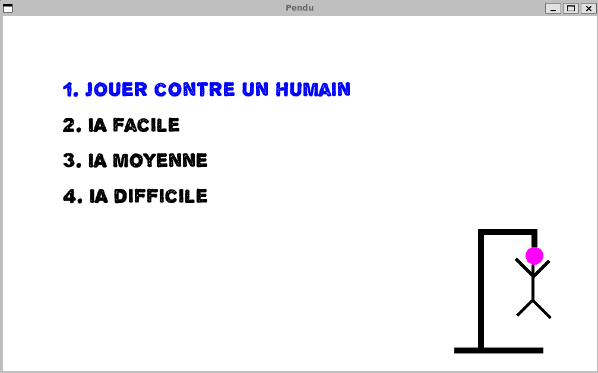
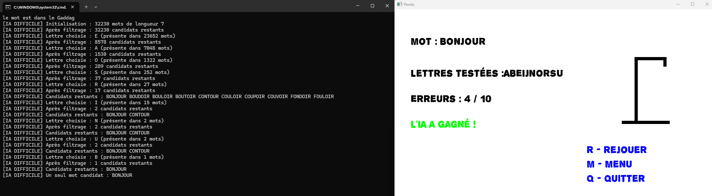

Présentation du Projet
Ce projet est une implémentation complète du jeu du Pendu en C++, dotée d'une interface graphique développée avec la bibliothèque SFML. L'objectif principal de ce projet était d'explorer et d'implémenter différentes stratégies d'intelligence artificielle.
Le jeu propose quatre modes distincts :
- Contre un autre joueur humain (saisie interactive du mot secret)
- Contre une IA de niveau Facile
- Contre une IA de niveau Moyen
- Contre une IA de niveau Difficile

Stratégies d'Intelligence Artificielle
IA Facile
Cette IA effectue des choix purement aléatoires. Elle sélectionne une lettre au hasard parmi celles qui n'ont pas encore été essayées, sans analyser la structure du mot à deviner.
IA Moyenne
Ce niveau introduit une approche statistique de base. L'IA utilise une pondération des lettres basée sur leur fréquence d'apparition dans la langue française. Elle effectue un tirage aléatoire biaisé pour favoriser systématiquement les lettres les plus courantes (E, A, I, S, N, R...).
IA Difficile : L'approche par filtrage lexical
Ce niveau de difficulté repose sur un algorithme avancé exploitant un dictionnaire. Il simule le raisonnement d'un joueur humain expérimenté en trois étapes :
- Initialisation des candidats : L'IA charge l'ensemble des mots du dictionnaire partageant la même longueur que le mot à deviner.
- Filtrage par contraintes : À chaque nouvelle tentative, l'IA réduit l'espace de recherche en éliminant les mots incompatibles selon :
- Les lettres déjà trouvées et leurs positions exactes (le masque).
- Les lettres testées mais absentes du mot.
- Choix optimal : Parmi les candidats restants, l'algorithme recalcule la fréquence d'apparition globale des lettres non essayées et sélectionne la plus probable.

Dictionnaire et Structure GADDAG
Afin d'assurer la cohérence du jeu, une structure de données de type GADDAG (arbre orienté avec transitions sur les lettres) est utilisée pour valider l'existence des mots saisis par les joueurs humains. Cela empêche l'IA de tenter de résoudre des mots qui n'existent pas dans le corpus de la langue française.
Compilation et Exécution
Le projet requiert un compilateur compatible C++17 et la bibliothèque SFML 2.5.